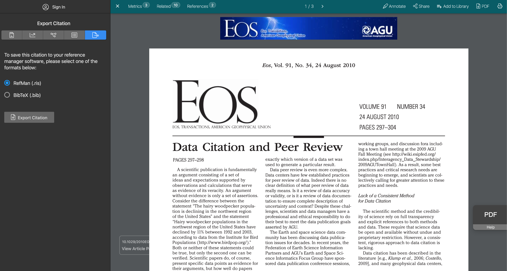

CEDSCI Citing DataFirst things first - what is CEDSCI
Where are we headed?
PLACEHOLDER FOR PUBLICATIONS MOCKUP
So how can we make our data easier to cite?
Shouldn't we have a one-click citation method?
What analogies should we be considering?

Please let me know if you'd like to work with us and develop a
solution
zach whitman zachary.richard.whitman@census.gov